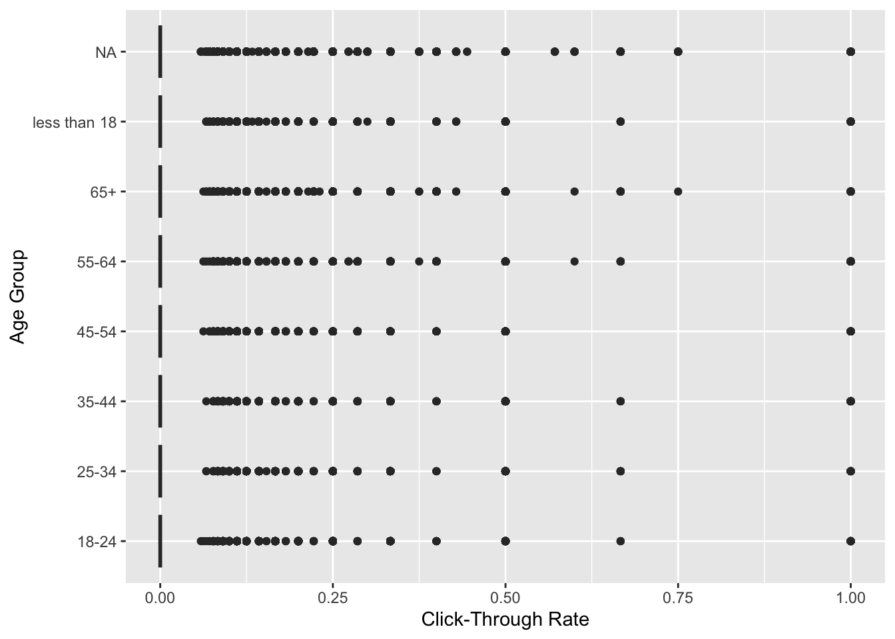
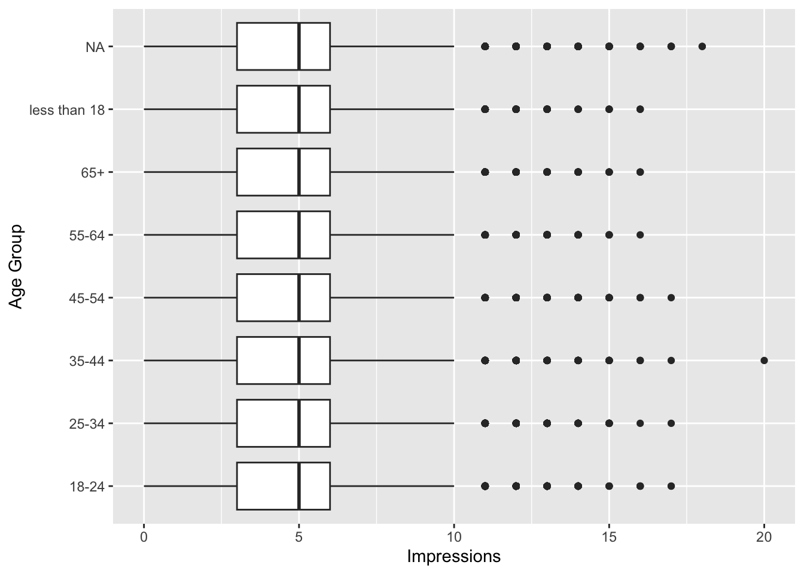
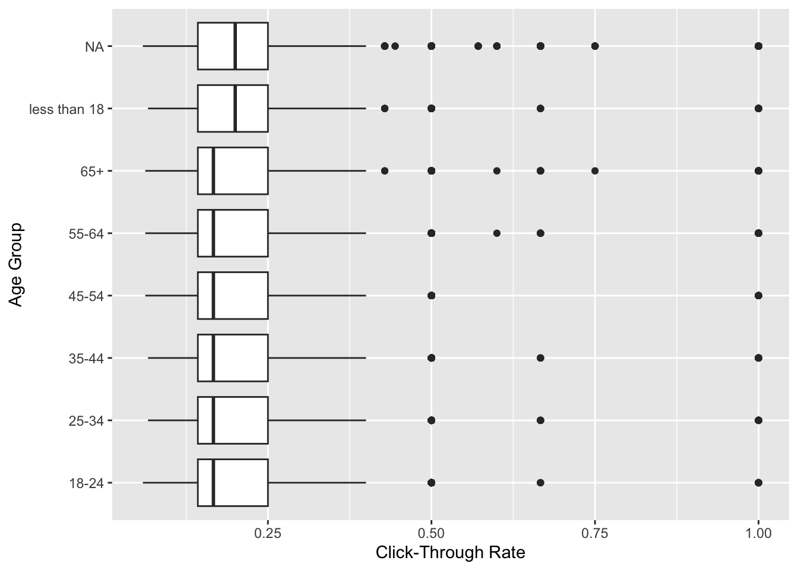
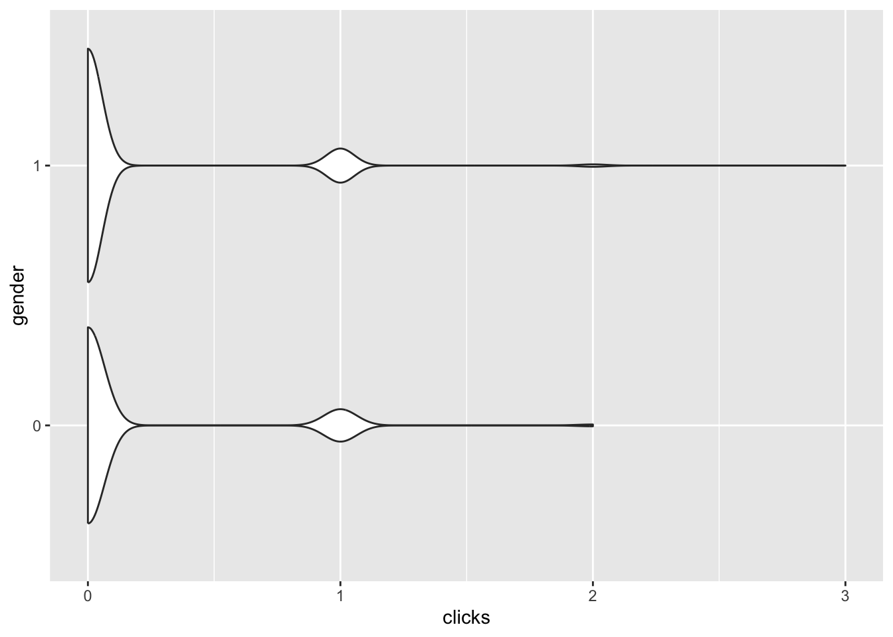
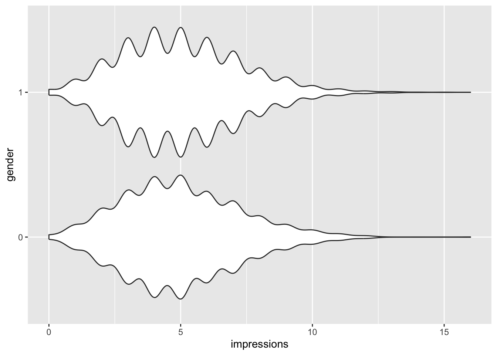
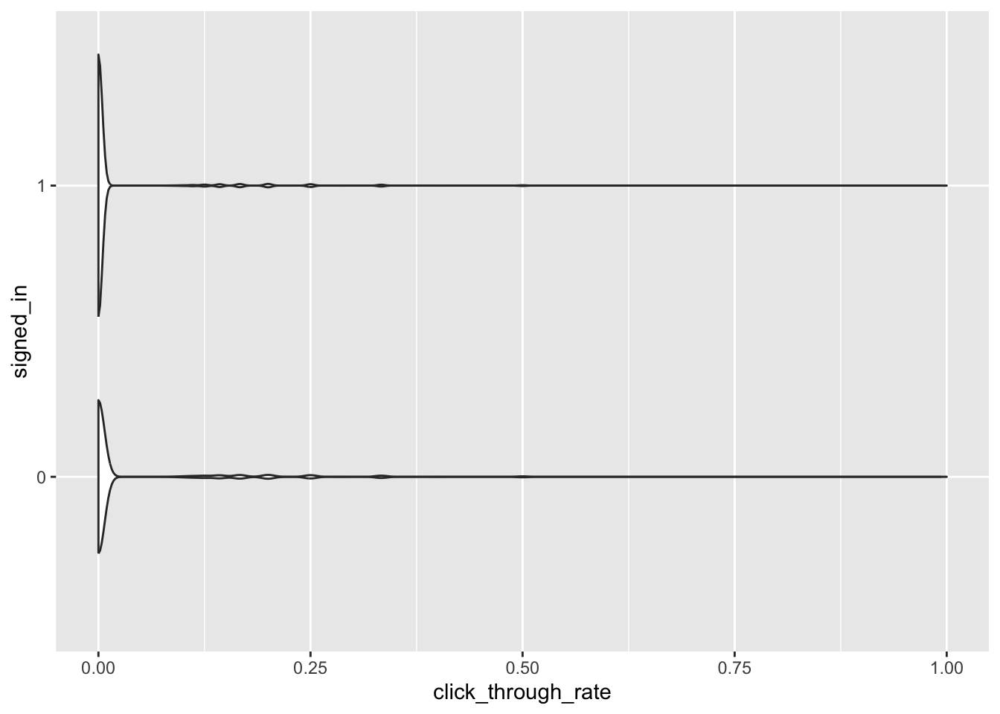
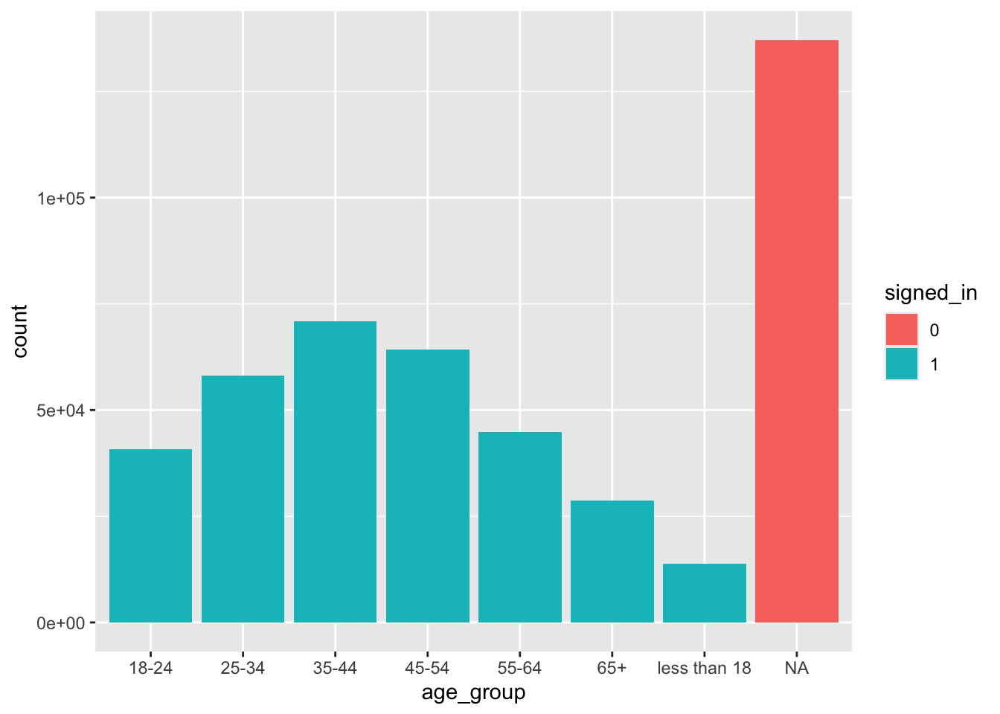
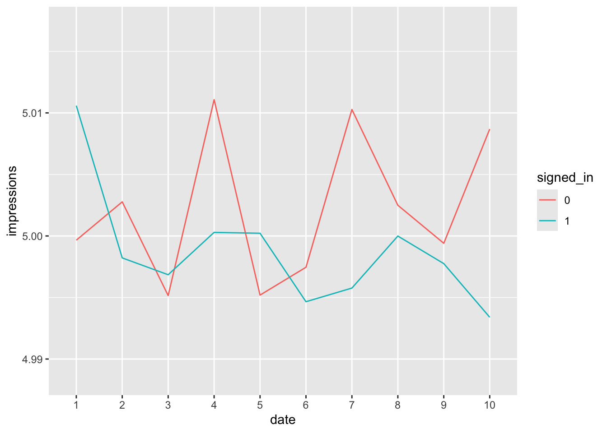
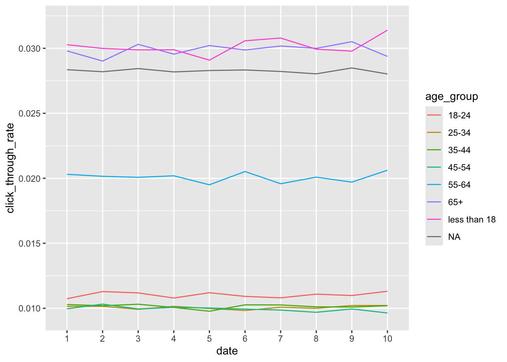

library(tidyverse)
library(janitor)
nyt_day1 <- read_csv("data/nyt1.csv") %>%
clean_names()
nyt_day1 <- nyt_day1 %>%
mutate(age_group = case_when(
age == 0 ~ NA,
age < 18 ~ "less than 18",
age <= 24 ~ "18-24",
age <= 34 ~ "25-34",
age <= 44 ~ "35-44",
age <= 54 ~ "45-54",
age <= 64 ~ "55-64",
age > 64 ~ "65+",
.default = "age"
))Homework 1 Solutions
Homework 1 Solutions
For this assignment, you may use R or Python, or a combination of both, to complete both case studies. You can use the code that we include in Labs 1 and 2 to answer these questions. You also may need to use other functions. I encourage you to make use of our textbook(s) and use the Internet to help you solve these problems. You can also work together with your classmates. If you do work together, you should provide the names of those classmates below.
Names of Collaborators (if any):
Case Study: New York Times Ad Impressions (Simulated)
There are 10 data sets in the /data subdirectory named nyt1.csv, nyt2.csv, …, nyt10.csv. Each file represents one day’s worth of simulated data on ad impressions and clicks on the New York Times homepage. Each row represents a single user. There are five columns:
Age(user’s age)Gender(user’s gender, coded as0= female,1= male)Impressions(number of ads displayed during the user’s visit)Clicks(number of clicks made by the user)Signed_In(whether or not the user was signed in as a member)
Load a single data file. Then do the following.
- Create a new variable,
age_group, that categorizes users into the following age groups: < 18, 18-24, 25-34, 35-44, 45-54, 55-64, and 65+.
Note that, ideally, students should recognize that an age of \(0\) is not a valid number, and replace those with NA. Students do not have to use the clean_names() function.
- Plot the distributions of impressions and “click-through rate” for all 6 age categories. (Note: Click-through rate is defined as the number of clicks divided by the number of impressions; it represents the proportion of ads that generated clicks.)
nyt_day1 <- nyt_day1 %>%
mutate(click_through_rate = clicks/impressions)
ggplot(nyt_day1, aes(x = click_through_rate)) +
geom_boxplot(aes(y = age_group)) +
labs(x = "Click-Through Rate", y = "Age Group")
ggplot(nyt_day1, aes(x = impressions)) +
geom_boxplot(aes(y = age_group)) +
labs(x = "Impressions", y = "Age Group")
Box plots or violin plots are most likely the best option to compare distributions that are heavily skewed across multiple groups like this. The main takeaway here is that there is really not much difference in terms of the distributions of click-through rate and impressions across age groups.
- Create a new variable to categorize users based on their click behavior. (The name and categories for this variable are up to you. Explain what decision[s] you make and why.)
nyt_day1 <- nyt_day1 %>%
mutate(clicker_or_not = case_when(
clicks == 0 ~ "Nonclicker",
clicks <= 2 ~ "Clicker",
clicks > 2 ~ "Frequent Clicker"
))Note: The question doesn’t ask, but it might be interesting to then use this variable to assess the distribution of click-through rate by age group for those users who click at all (essentially filtering out the zeros):
nyt_day1 %>%
filter(clicker_or_not != "Nonclicker") %>%
ggplot(aes(x = click_through_rate)) +
geom_boxplot(aes(y = age_group)) +
labs(x = "Click-Through Rate", y = "Age Group")
When we are looking just at those users who click at least once, the click-through rate tends to be higher for users under 18 or who are signed-out.
- Explore the data and make visual and quantitative comparisons across user segments/demographics to answer the following:
- How do <18 year old males differ from <18 year old females in terms of clicks and impressions?
nyt_day1 %>%
filter(age_group == "less than 18") %>%
mutate(gender = factor(gender)) %>%
ggplot(aes(x = clicks, y = gender)) +
geom_violin()
A box plot or violin plot would work best for this question. There is really not much, if any, difference.
nyt_day1 %>%
filter(age_group == "less than 18") %>%
mutate(gender = factor(gender)) %>%
ggplot(aes(x = impressions, y = gender)) +
geom_violin()
Again a box plot or violin plot would work best for this question. There is really not much, if any, difference.
- How does the distribution of click-through rate for users who are signed in differ from the distribution for those who are **not** signed in?nyt_day1 %>%
mutate(signed_in = factor(signed_in)) %>%
ggplot(aes(x = click_through_rate, y = signed_in)) +
geom_violin()
There is really not much, if any, difference.
- Are certain age groups more likely to be signed in than others? Which ones?nyt_day1 %>%
mutate(signed_in = factor(signed_in)) %>%
ggplot(aes(x = age_group,
fill = signed_in)) + geom_bar()
Part of the goal of this question is to hint at the fact that we do not have age data for signed-out users – all their ages are listed as \(0\). If students don’t recognize this, they will likely (incorrectly) say that “all the signed-out users are under 18.”
- Calculate summary statistics for the click-through rate. These should include (1) quartiles, (2) mean, (3) median, (4) minimum and maximum, and (5) variance. Choose two user segments to compare these statistics across (for example, compare the mean, median, and quartiles for users 25-34 to those for users 65+).
General summary statistics for click-through rate:
library(kableExtra)
stats <- nyt_day1$click_through_rate %>%
summary() %>%
unname()
variance <- var(nyt_day1$click_through_rate,
na.rm = T)
tibble("Statistic" = c("Minimum", "1st Quartile",
"Median", "Mean", "3rd Quartile",
"Maximum", "Variance"),
"Value" = c(stats[1], stats[2], stats[3],
stats[4], stats[5], stats[6],
variance)) %>%
kbl() %>%
scroll_box(width = "275px", height = "275px")| Statistic | Value |
|---|---|
| Minimum | 0.0000000 |
| 1st Quartile | 0.0000000 |
| Median | 0.0000000 |
| Mean | 0.0184705 |
| 3rd Quartile | 0.0000000 |
| Maximum | 1.0000000 |
| Variance | 0.0047658 |
Statistics comparing the rates for users less than 18 years of age to users 65 and up:
stats_a <- nyt_day1 %>%
filter(age_group == "less than 18") %>%
.$click_through_rate %>%
summary() %>%
unname()
stats_b <- nyt_day1 %>%
filter(age_group == "65+") %>%
.$click_through_rate %>%
summary() %>%
unname()
variance_a <- nyt_day1 %>%
filter(age_group == "less than 18") %>%
.$click_through_rate %>%
var(na.rm = T)
variance_b <- nyt_day1 %>%
filter(age_group == "65+") %>%
.$click_through_rate %>%
var(na.rm = T)
tibble("Statistic" = c("Minimum", "1st Quartile",
"Median", "Mean", "3rd Quartile",
"Maximum", "Variance"),
"Users <18" = c(stats_a[1:6],
variance_a),
"Users 65+" = c(stats_b[1:6],
variance_b)) %>%
kbl() %>%
scroll_box(width = "275px", height = "275px")| Statistic | Users <18 | Users 65+ |
|---|---|---|
| Minimum | 0.0000000 | 0.0000000 |
| 1st Quartile | 0.0000000 | 0.0000000 |
| Median | 0.0000000 | 0.0000000 |
| Mean | 0.0302772 | 0.0298027 |
| 3rd Quartile | 0.0000000 | 0.0000000 |
| Maximum | 1.0000000 | 1.0000000 |
| Variance | 0.0076910 | 0.0070643 |
- Summarize your findings in a brief (1-2 paragraph) report intended for a New York Times (NYT) advertising team.
Answers may vary. An ideal report might mention the following: It’s difficult to learn much information about the users who are not signed in, because we don’t have their demographic details (age or gender). About 29.91% of users are not signed in. Of those who are signed in, age follows a somewhat normal distribution, with a small number of users less than 18 and over 65, and the majority of users more middle-aged, between 35 and 54. In terms of gender, of users who are signed in, about 63% are female. Overall, the distributions of clicks, impressions, and click-through rates are heavily positively skewed, indicating that a vast majority of users, regardless of demographics, are not clicking on ads, etc, although some users click as many as 4 times. It might be worth further investigating what variables drive some users to click or engage and not others.
Additional Questions for 231 Students
Now read in at least three to four more of these data files and extend your analyses.
- Visualize impressions and click-through rate for signed-in versus signed-out users over time.
Students do not have to read more than three or four of these files in, but they can read in all ten if they choose. The following code reads in all ten files.
Visualizations can vary but should include (1) impressions, (2) signed-in vs. signed-out, and (3) time, measured in terms of what day it is. The following displays two line graphs of impressions and click-through rate over time, broken down by whether or not users are signed in:
nyt_day <- list()
for(i in 1:10){
nyt_day[[i]] <- read_csv(paste0("data/nyt", i, ".csv")) %>%
clean_names()
nyt_day[[i]] <- nyt_day[[i]] %>%
mutate(date = rep(i, dim(nyt_day[[i]])[1]))
}
nyt_all <- do.call(rbind, nyt_day) %>%
tibble()
nyt_all <- nyt_all %>%
mutate(click_through_rate = clicks/impressions) %>%
mutate(age_group = case_when(
age == 0 ~ NA,
age < 18 ~ "less than 18",
age <= 24 ~ "18-24",
age <= 34 ~ "25-34",
age <= 44 ~ "35-44",
age <= 54 ~ "45-54",
age <= 64 ~ "55-64",
age > 64 ~ "65+",
.default = "age"
))
head(nyt_all)# A tibble: 6 × 8
age gender impressions clicks signed_in date click_through_rate age_group
<dbl> <dbl> <dbl> <dbl> <dbl> <int> <dbl> <chr>
1 36 0 3 0 1 1 0 35-44
2 73 1 3 0 1 1 0 65+
3 30 0 3 0 1 1 0 25-34
4 49 1 3 0 1 1 0 45-54
5 47 1 11 0 1 1 0 45-54
6 47 0 11 1 1 1 0.0909 45-54 nyt_all %>%
mutate(signed_in = factor(signed_in),
date = factor(date)) %>%
ggplot(aes(x = date, group = signed_in)) +
geom_line(aes(y = click_through_rate,
color = signed_in), stat="summary")
nyt_all %>%
mutate(signed_in = factor(signed_in),
date = factor(date)) %>%
ggplot(aes(x = date, group = signed_in)) +
geom_line(aes(y = impressions,
color = signed_in), stat="summary")
The click-through rate and impressions rates over time are, in general, very consistent. The only noticeable difference is the fact that users who are not signed-in tend to have a higher click-through rate, regardless of time.
Users can simply make three or four different plots, one per day, although this is less effective for comparisons over time.
- Calculate summary statistics to compare signed-in versus signed-out users over time.
Answers may vary; note that the problem doesn’t specify a variable to compare on. It might make sense to use click-through rate. It probably doesn’t make sense to compare age or gender, since that information isn’t provided for users who are not signed in. To use click-through rate:
summarystats <- list()
variances <- list()
for(i in 1:10){
summarystats[[i]] = nyt_all %>%
filter(date == i) %>%
.$click_through_rate %>%
summary() %>%
unname()
variances[[i]] = nyt_all %>%
filter(date == i) %>%
.$click_through_rate %>%
var(na.rm = T)
}
tibble("Statistic" = c("Minimum", "1st Quartile",
"Median", "Mean", "3rd Quartile",
"Maximum", "Variance"),
"Day 1" = c(summarystats[[1]][1:6],
variances[[1]]),
"Day 2" = c(summarystats[[2]][1:6],
variances[[2]]),
"Day 3" = c(summarystats[[3]][1:6],
variances[[3]]),
"Day 4" = c(summarystats[[4]][1:6],
variances[[4]]),
"Day 5" = c(summarystats[[5]][1:6],
variances[[5]]),
"Day 6" = c(summarystats[[6]][1:6],
variances[[6]]),
"Day 7" = c(summarystats[[7]][1:6],
variances[[7]]),
"Day 8" = c(summarystats[[8]][1:6],
variances[[8]]),
"Day 9" = c(summarystats[[9]][1:6],
variances[[9]]),
"Day 10" = c(summarystats[[10]][1:6],
variances[[10]])) %>%
kbl() %>%
scroll_box(width = "800px", height = "275px")| Statistic | Day 1 | Day 2 | Day 3 | Day 4 | Day 5 | Day 6 | Day 7 | Day 8 | Day 9 | Day 10 |
|---|---|---|---|---|---|---|---|---|---|---|
| Minimum | 0.0000000 | 0.0000000 | 0.0000000 | 0.0000000 | 0.0000000 | 0.0000000 | 0.0000000 | 0.0000000 | 0.0000000 | 0.0000000 |
| 1st Quartile | 0.0000000 | 0.0000000 | 0.0000000 | 0.0000000 | 0.0000000 | 0.0000000 | 0.0000000 | 0.0000000 | 0.0000000 | 0.0000000 |
| Median | 0.0000000 | 0.0000000 | 0.0000000 | 0.0000000 | 0.0000000 | 0.0000000 | 0.0000000 | 0.0000000 | 0.0000000 | 0.0000000 |
| Mean | 0.0184705 | 0.0184623 | 0.0185438 | 0.0184100 | 0.0183516 | 0.0184824 | 0.0184217 | 0.0183415 | 0.0185161 | 0.0184354 |
| 3rd Quartile | 0.0000000 | 0.0000000 | 0.0000000 | 0.0000000 | 0.0000000 | 0.0000000 | 0.0000000 | 0.0000000 | 0.0000000 | 0.0000000 |
| Maximum | 1.0000000 | 1.0000000 | 1.0000000 | 1.0000000 | 1.0000000 | 1.0000000 | 1.0000000 | 1.0000000 | 1.0000000 | 1.0000000 |
| Variance | 0.0047658 | 0.0047405 | 0.0048267 | 0.0047397 | 0.0046816 | 0.0048084 | 0.0047269 | 0.0047617 | 0.0047888 | 0.0047612 |
- Visualize click-through rate for the six different age groups over time.
nyt_all %>%
mutate(date = factor(date)) %>%
ggplot(aes(x = date, group = age_group)) +
geom_line(aes(y = click_through_rate,
color = age_group), stat="summary")
The question doesn’t ask students to describe the pattern in words, but it’s worth noting that the click-through rate for users who are 65 or older and less than 18 is virtually the same, approximately 3 times that of the other groups. (The click-through rate for signed-out users is also three times that of the other groups.)